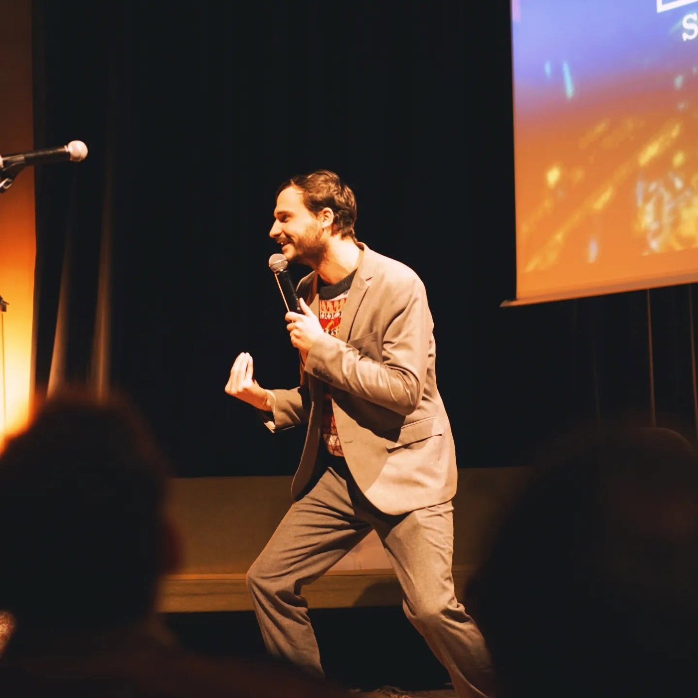
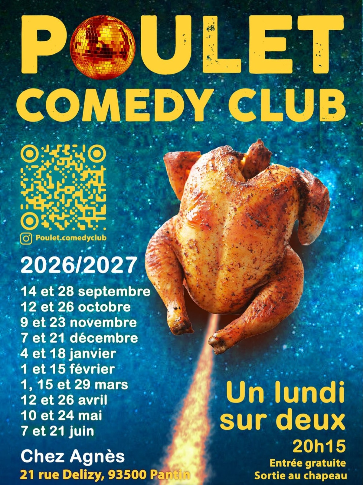

Stand-up · spectacles · plateaux
Sur scène
Un spectacle en création, un rendez-vous régulier au Poulet Comedy Club et l’envie de jouer partout où l’on peut se rencontrer.
Deuxième spectacle · en rodage
Merci pour l'attention
Titre provisoire
Pauk veut être aimé pour ce qu’il est. Encore faut-il qu’il arrête de s’adapter à tout le monde.
Du stand-up, des chansons et de l’improvisation pour explorer nos rencontres, nos contradictions et ce besoin de plaire qui complique tout.

Prochaines dates
Les prochaines dates seront annoncées ici. Contacter Pauk pour connaître les représentations à venir.
Un lundi sur deux · 20 h 15 · Pantin
Poulet Comedy Club
Un plateau, des rencontres.
Et parfois une chanson qui n’était pas prévue.
Pauk prend le micro, présente les humoristes et partage la scène au Poulet Comedy Club. Des blagues en rodage, de l’improvisation et le public tout près.
Chez Agnès
21 rue Delizy, 93500 Pantin
Entrée gratuite · sortie au chapeau

Saison 2026–2027
Les lundis du Poulet
Toutes les dates de septembre à juin sur l’affiche de la saison. L’agenda ci-dessus présente automatiquement les prochaines soirées.
Ouvrir l’affiche en grand →
L’Art de Rater
Premier spectacle · seul-en-scène musical · 1 h
Tout un spectacle autour du raté.
Joué pendant deux ans et demi à Paris, ce premier seul-en-scène mêle stand-up, musique et improvisation. Pauk l’a également présenté au Printemps du Rire à Toulouse et en partie dans Comedy Club Tour avec Doully sur Comédie+.

Programmer Pauk
Comedy clubs, théâtres et festivals.
Basé à Paris, Pauk se déplace en France et à l’étranger. Indiquez la date, le lieu, le format souhaité et les conditions d’accueil pour échanger sur votre programmation.